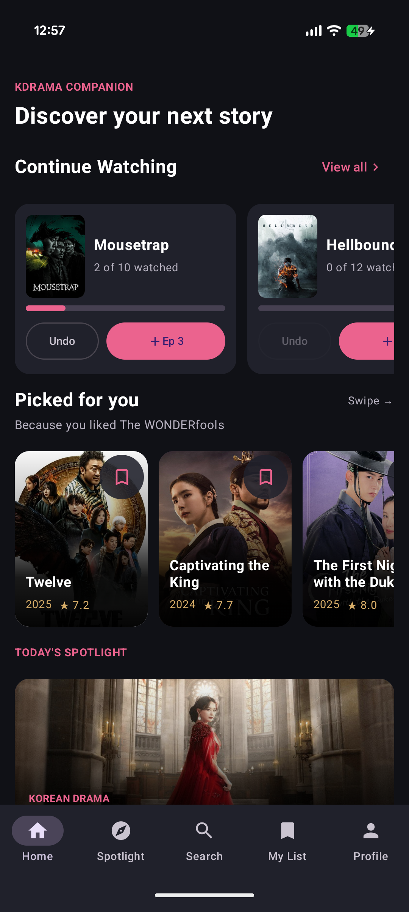
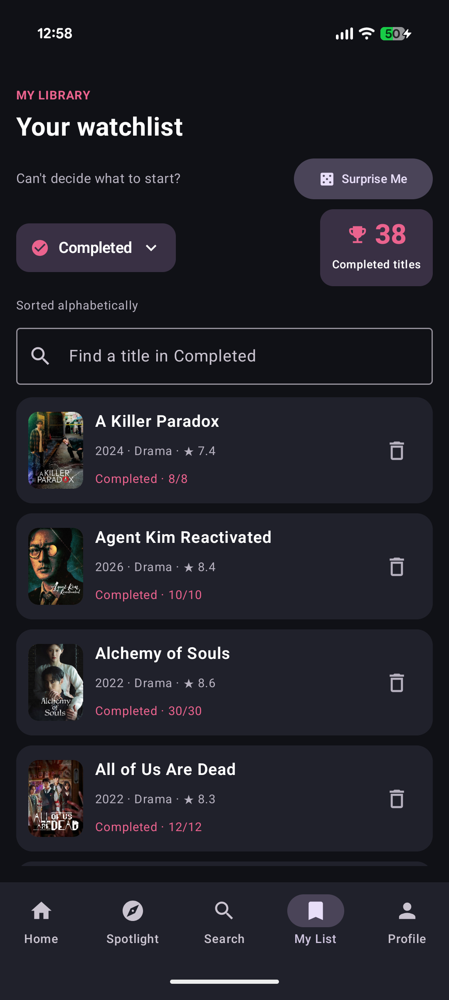
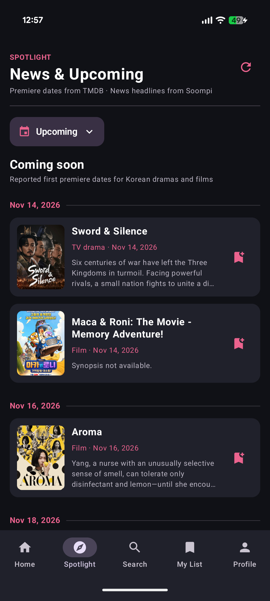
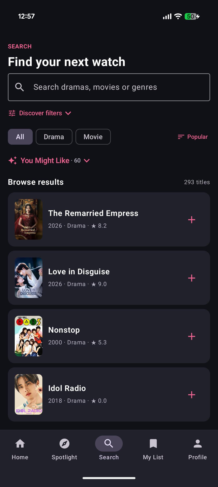
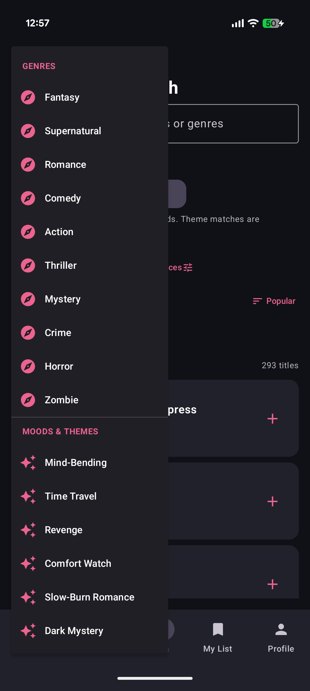
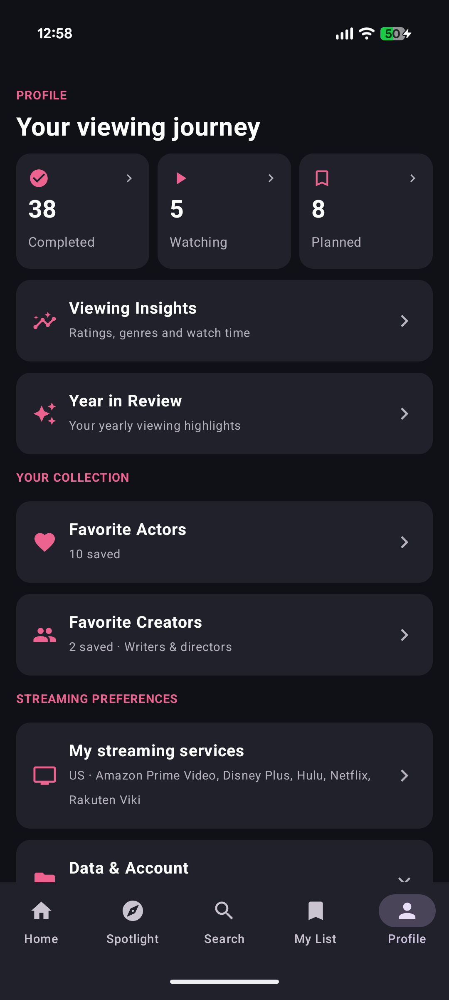
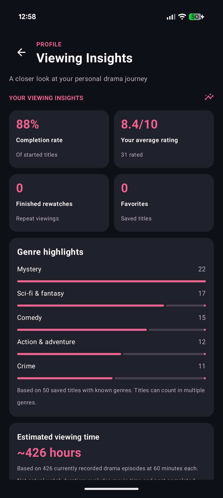
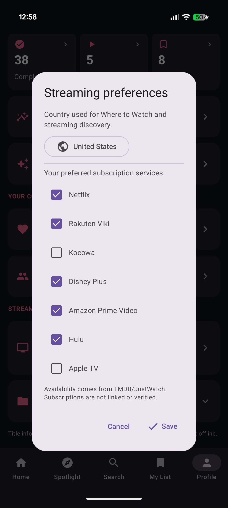
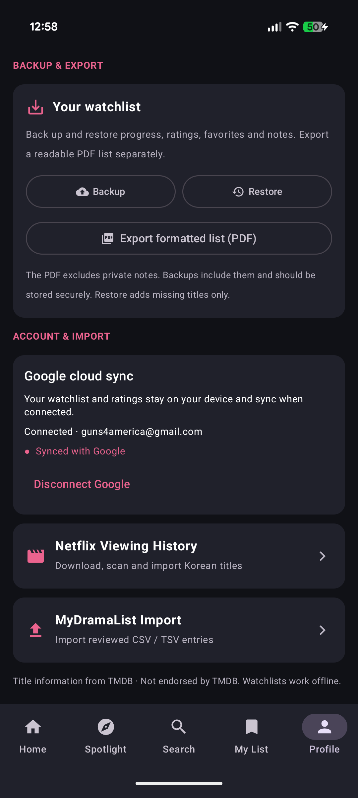

Find the one you
can't stop watching.
Explore Korean dramas and movies by genre, mood, and personalized recommendations. From comfort watches to mind-bending mysteries.
✦ Time Travel✦ Fantasy✦ Dark Mystery✦ Romance
Your Korean drama obsession deserves a home. Track every episode, discover your next favorite, and connect with friends who love a good plot twist as much as you do.

From your personal watchlist to recommendations from friends, everything that makes Korean stories unforgettable belongs together.
Explore Korean dramas and movies by genre, mood, and personalized recommendations. From comfort watches to mind-bending mysteries.
Keep Watching, Planned, and Completed titles in their own place. Search, sort, and update your progress in seconds.
Track episodes as you go, jump back into your current shows, and keep your progress close at hand.
Save favorite actors and creators, rate titles, and collect the stories worth remembering.
Explore your favorite genres, personal ratings, viewing estimates, and yearly highlights.
Keep your watchlist available offline, sync with your Google account when connected, and export a shareable PDF list.
Find your people, trade K-drama recommendations, and discover how your tastes overlap — without giving up control of your lists and ratings.
Compare ratings only when your friend chooses to share them.
Connect using an invitation link or friend code. Keep your circle as close as you like.
Compare shared watchlists and ratings, explore taste compatibility, and find Korean titles to try together.
Recommend a title to a friend. They decide whether to explore it, add it to Plan to Watch, or dismiss it.
See updates from friends who have opted to share selected watchlist changes, ratings, and other activity.
All friend-sharing categories start disabled. Choose which lists, ratings, reviews, or favorite people others can see. Your recommendations never automatically change a friend's watchlist.
A thoughtfully designed companion for discovering stories, tracking episodes, and connecting over the ones you love.

Know what you finished, what you're following, and what you're saving for the perfect weekend. All without juggling notes or remembering episode numbers.
Celebrate the plots you survived, the characters you adored, and the genres you can't resist.
Explore KDrama Companion's actual Android screens. Scroll across to see discovery, tracking, insights and more.







Scroll to explore all nine screens
Browse titles, explore moods, and find something that feels like you.
Add it to your plan-to-watch list, or start watching right away.
Track each episode, rate your favorites, and see your story grow.
The essentials, without the plot spoilers.
No. Friend sharing starts off by default. You choose which watchlists, ratings, reviews, and favorites are visible through the app’s sharing settings.
Add friends with an invitation link or friend code, then use the app’s recommendation feature to send them a title. They can view details, add it to Plan to Watch, or dismiss the suggestion.
No. KDrama Companion is a discovery and watch-tracking app. It helps you find where a title may be available to watch, but does not stream video itself.
Your saved watchlists work offline. Discovery, fresh title information, news, and cloud synchronization require connectivity.
Yes. The app supports backups and restores, Google account synchronization, and exporting selected watchlists as a formatted PDF.
Yes. Discover and organize both Korean dramas and Korean films in one place.
Find your next obsession, share it with friends, and keep every favorite a little closer.
Find KDrama Companion on Google Play